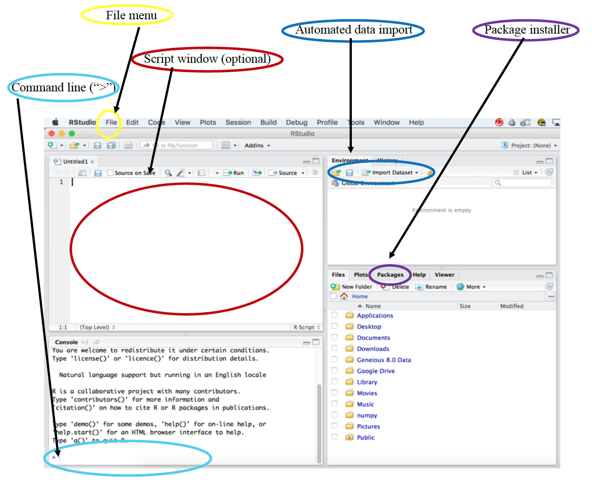
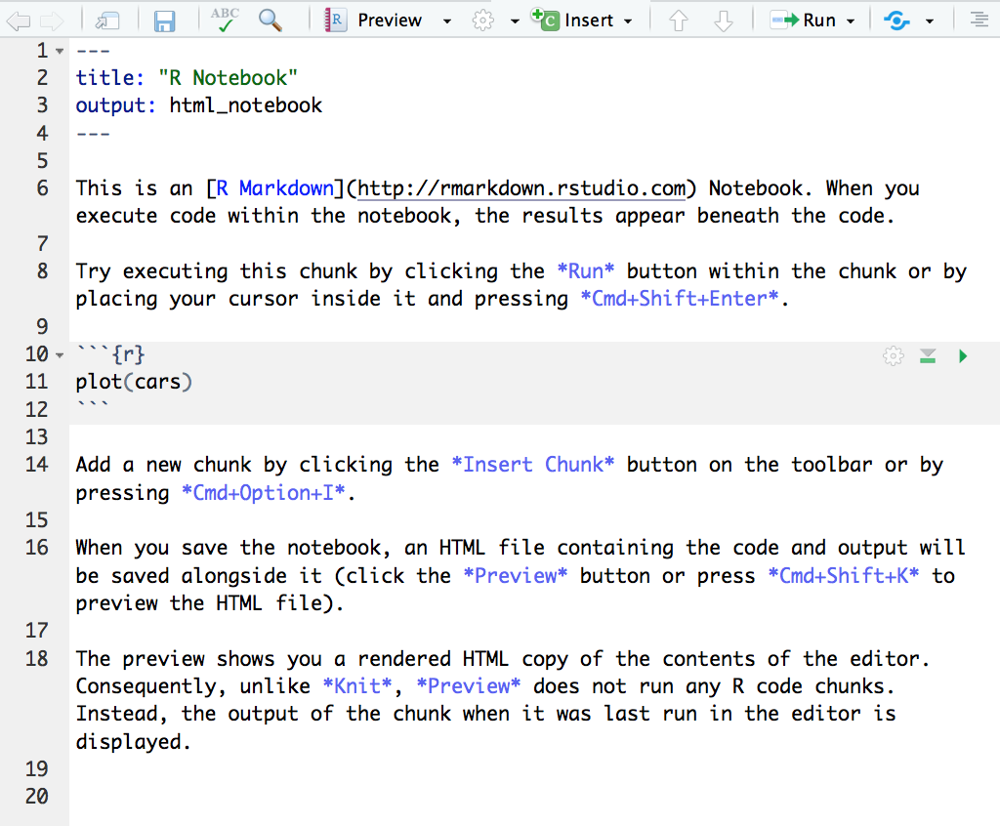
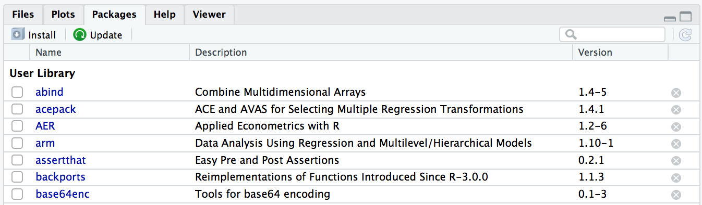

1 RStudio Environment
Here we will gain some basic familiarity with the RStudio environment. Usually the first confusion for students in using R is in actually installing it. We typically encourage students to develop and interface with R through RStudio. So let’s take a look at what RStudio has to offer.
Below is an image of the typical RStudio environment.
 When R is opened, a workspace is created and code run from a script, at the command line or from one of the built in functions and by default is run from this workspace.
1.1 Importing data
We will begin by importing a dataset posted by Merijn Coumans from a Tesla User’s Group about the battery life, charge history, location, etc. of Tesla cars. A slightly cleaned version of the data can be found cleanTeslaBattery.csv. Download this dataset and save it somewhere you can find it.
On the upper right select the Import Dataset button, for this case select From Text (base). When you find the dataset, select open and you will see a new menu open. A few things to note are the “Name” box specifying the variable name assigned to the dataset, and also note the “Header” option and select appropriately depending on whether there is a header row or not. Import the data. Note what appears in the terminal.
Tesla <- read.csv("Data/cleanTeslaBattery.csv")
View(Tesla)Teaching tip: It helps to introduce students to where they can change the name of the variable referring to the data they are reading in and the teach them to check that headers have been selected, if appropriate.
For entry level students, this is an easy way to import data, but it also provides us with an example of the command that we could have manually typed to load the data, and which we can put into our script or notebook document. We will save this command for use in just a bit.
Without introducing object types or anything advanced, a quick summary of the data can give some useful information and let students know if the data read in as expected. We will try that command shortly.
Teaching tip: Students with Mac’s using Numbers frequently open the files they download using Numbers. Numbers adds some extra invisibles that will throw errors if the data is then loaded into R.
1.2 Command line
Let’s go ahead and compute a summary of the data we just imported to double-check how R is treating each variable, e.g. categorical, quantitative, or character.
summary(Tesla) Location ManufactureDate
Asia Pacific & Europe (excl UK):1058 2015-04-03T00:00:00Z: 46
Canada : 47 2014-06-04T00:00:00Z: 32
UK : 12 2015-06-10T00:00:00Z: 32
USA : 222 2013-09-10T00:00:00Z: 28
2013-11-20T00:00:00Z: 27
(Other) :1169
NA's : 5
ReadDate AgeInDays Model
2015-01-15T00:00:00Z: 8 Min. : 0.0 Model S 85 :475
2015-10-21T00:00:00Z: 8 1st Qu.: 252.0 Model S P85 :178
2014-09-24T00:00:00Z: 7 Median : 494.0 Model S 85D :112
2015-12-09T00:00:00Z: 7 Mean : 734.1 Model S 90D :107
2014-09-18T00:00:00Z: 6 3rd Qu.: 832.8 Model S 70D :103
2014-09-26T00:00:00Z: 6 Max. :43219.0 Model S P85D: 91
(Other) :1297 NA's :1 (Other) :273
MileageKM MileagePerDay MaxRangeKM ReplacementBatt
Min. : 6 Min. : 0.70 Min. :174.0 No :1265
1st Qu.: 17838 1st Qu.: 57.40 1st Qu.:358.0 Yes: 74
Median : 39929 Median : 84.10 Median :377.0
Mean : 51325 Mean : 88.63 Mean :361.5
3rd Qu.: 69278 3rd Qu.:113.42 3rd Qu.:389.0
Max. :361500 Max. :282.90 Max. :509.0
NA's :5 NA's :1
MileageSinceNewKM BatteryAgeDays WattHoursPerKM OriginalRangeKM
Min. : 6 Min. : 1.0 Min. :155.0 Min. :180.0
1st Qu.: 17687 1st Qu.: 246.0 1st Qu.:208.0 1st Qu.:365.0
Median : 39120 Median : 487.0 Median :221.0 Median :400.0
Mean : 50616 Mean : 571.2 Mean :234.8 Mean :378.8
3rd Qu.: 69182 3rd Qu.: 823.0 3rd Qu.:241.0 3rd Qu.:400.0
Max. :284500 Max. :2466.0 Max. :450.0 Max. :515.0
NA's :1 NA's :6 NA's :22
SuperchargeFreq MaxChargeFreq
twice a month :357 a few times a year :503
monthly :261 monthly :346
a few times a year:240 twice a month :164
weekly :189 once or twice a year: 84
twice a week :107 weekly : 55
(Other) : 75 (Other) : 71
NA's :110 NA's :116
RunToEmptyFreq DailyChargeLevel Cycles ModelXS
never :438 Min. :10.00 Min. : 0.02 3 : 4
a few times a year :347 1st Qu.:80.00 1st Qu.: 55.05 85: 24
once or twice a year:331 Median :80.00 Median :123.95 S :1277
monthly : 72 Mean :80.83 Mean :155.24 X : 34
twice a month : 27 3rd Qu.:90.00 3rd Qu.:213.89
(Other) : 9 Max. :90.00 Max. :906.37
NA's :115 NA's :279 NA's :23
ModNum
85 :475
P85 :178
90D :136
85D :112
70D :103
P85D : 91
(Other):244 Based on the summary, what can you say about how R is summarizing the age column? This is good when working with introductory students.
Questions
The head and tail functions allow you to inspect the first few rows or last few rows in the data. Implement one of these on your dataset. How many rows of data do you get?
Try the names function on this data? What does it produce?
To demonstrate the utility of R, let’s compute the mean of the Mileage column.
mean(Tesla$MileageKM)[1] 51325.09Teaching tip: this is a useful place to introduce students to case sensitivity and what happens when you forget a parentheses (You can get out of it using the Esc key.)
Programmer’s note: R treats columns in a dataframe much like dictionaries in Python, as well as using matri notation like Python, Java or Matlab. Aside from the “$” operator, one can reference the row or column using numbers or names (if they have them) The code below computes the standard deviation of the same column.
sd(Tesla[,"MileageKM"])[1] 46712.35Practice Try the histogram function hist and the boxplot function boxplot on one of the quantitative variables.
Teaching tip: When teaching R to introductory students, make it accessible as a go to tool for completing homework the first day.
Teaching tip: When importing data, frequently students will select the readr option. In many cases this won’t matter, but readr reads the data in as a tibble instead of a data frame. In many cases students won’t notice, but because of data structure of the tibble object, there are cases where downstream analysis will not behave the same, so for simplicity the base option is often easier. However, for more advanced users, tibble are often very helpful.
For intro students to make it their go to tool, they often need a calculator for their homework, show how it can be done easily. Here we show how to input your own data and do some basic computations on it.
dat <- c(1,9,23,35)
median(dat)[1] 16Note that the command c() specifies a list that is assigned to the variable dat that can then be used for calculation later.
Teaching tip: Intro. students often have a difficult time grasping that variable names are just a reference they are giving to something an that they can call that thing later on, so I often have them practice calling variables and renaming variables to help them overcome this.
1.3 Scripts and Notebooks
This brings us to reproducability. One of the great strengths of R is in creating reproducible analyses. So let’s save the code we just entered so that we can run it later. First we will create a new R Script.
Under file, open a new R Script. Copy the code you just entered at the terminal and past it into the script. Note that you will have to delete the “>” character from each new line. Some things to know about running from scripts: The run button is the little green arrow at the top of the text editor, if you select “run selected line(s),” the line the cursor is currently on will be run, or the current selected code will be executed. Try re-running all of the code you have just entered in your script from the terminal.
Notebooks are another nice way to create reproducible analyses. Under the file menu open a new notebook and you should see something like this:  You will find that the R community makes getting started in many of these files quite straightforward, with many detail on how to use them in the new files. Information on notebooks will be given later.
Note that the cars variable here is a pre-installed dataset that comes with R that is frequently used in examples.
Teaching tip: Remind students to test what they have saved. I find that often they may run something at the command line and forget to save it, so their code won’t run from a clean workspace the next time.
Question When would students want to use the command line over a notebook or a script?
1.4 Loading Packages
RStudio provides easy features for package management. The lower right-hand window has a package manager.  The packages listed are currently installed, while others may be installed using the Install option. Note that when you are ready to use a package you must also load it using the library() function. Try loading the ggplot2 package, which we will be using later in this workshop.
Teaching Tip: Students often forget that the workspace and the variables in it use memory, so encourage them to clean up unused items in the workspace.